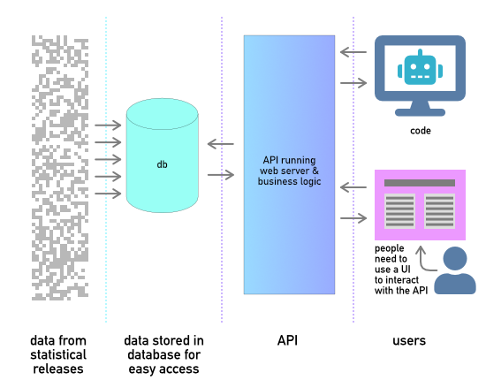

Introduction: Data server API
About this documentation
This documentation is divided into two areas - first, a tutorial section that describes how to use and install the API, prepare data for inclusion, examples of user interfaces and code that connect to the API and explanations about why the API is the way it is. This is all contained in the section called "Tutorials".
The second area of the documentation is autogenerated from the code and is intended to help advanced users find their way through the code. It is split into two sections: "Modules" and "Globals", with the former being the specialised code libraries that have been abstracted out of the main code either because they can then be re-used, or to hide their complexity from the main code.
What is this API?
This API (Application Programming Interface) presents data from statistical releases for use by code. This data is provided in a format suitable for further processing by computer. A small part of this system is a user interface (UI) that describes what data is available and allows users to preview and download data of their choice. It does this by creating the appropriate API call based on the user choice (shown below).

What problem does it solve?
Spreadsheets.
The flexibility of spreadsheets make them great for all sorts of numeric manipulations. Unfortunately, this flexibility makes it very easy to take what should be consistently structured data and introduce inconsistencies. Sometimes this may be done accidentally by forgetting to unmerge cells, or deliberately when introducing formatting to make the spreadsheet look pretty. Computers don't have the same ideas as humans about what makes data pretty. They prefer it plain and unadorned, regular with no inconsistencies. This API makes data pretty for computers, not humans.